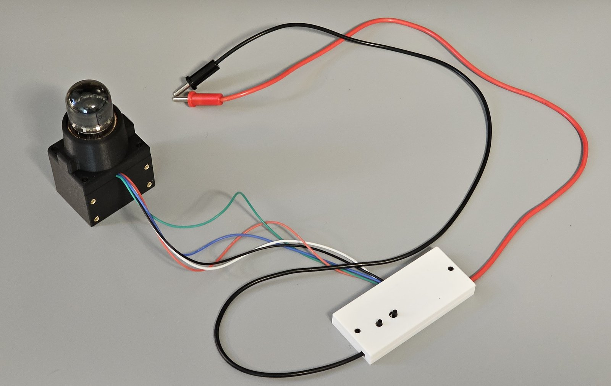
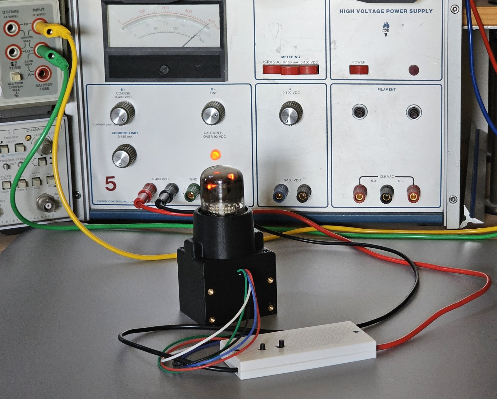
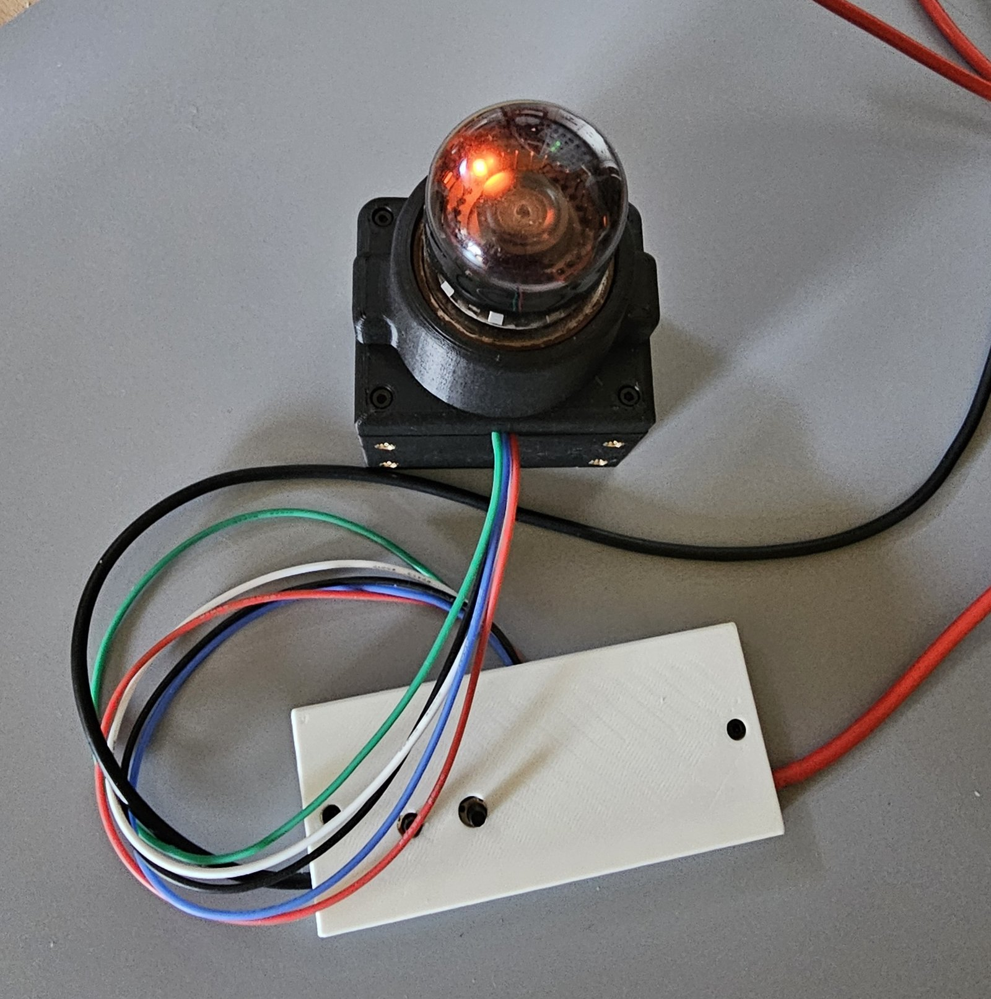
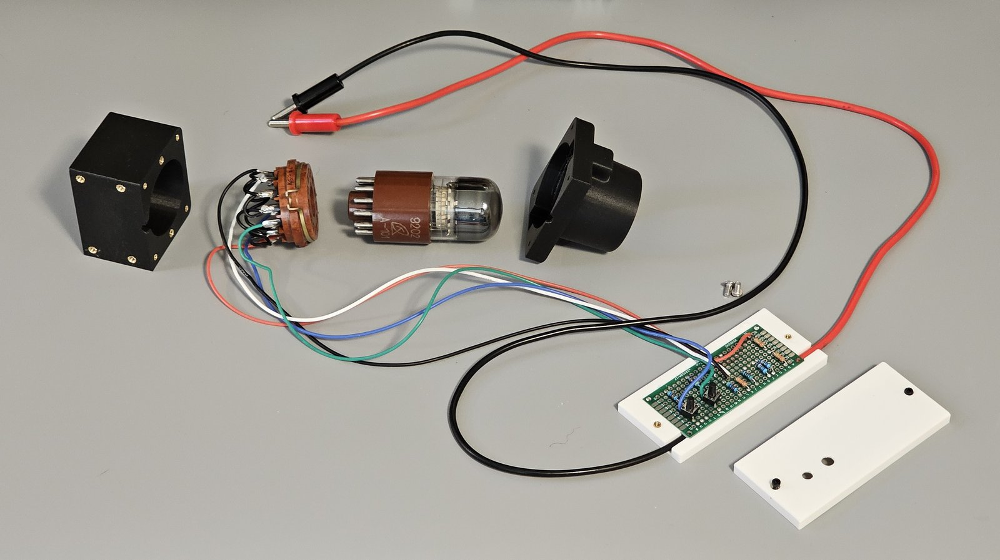
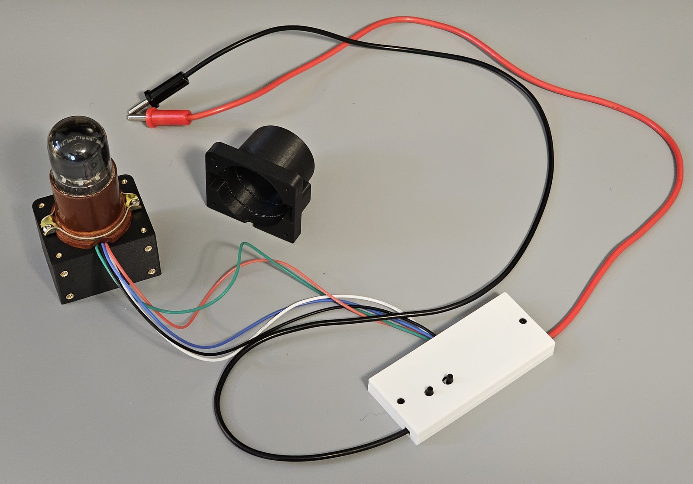
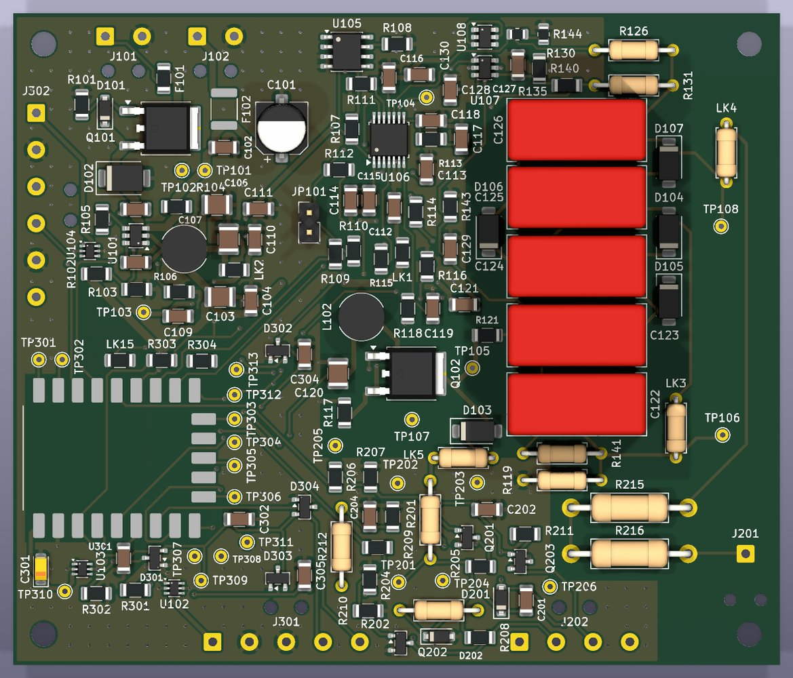
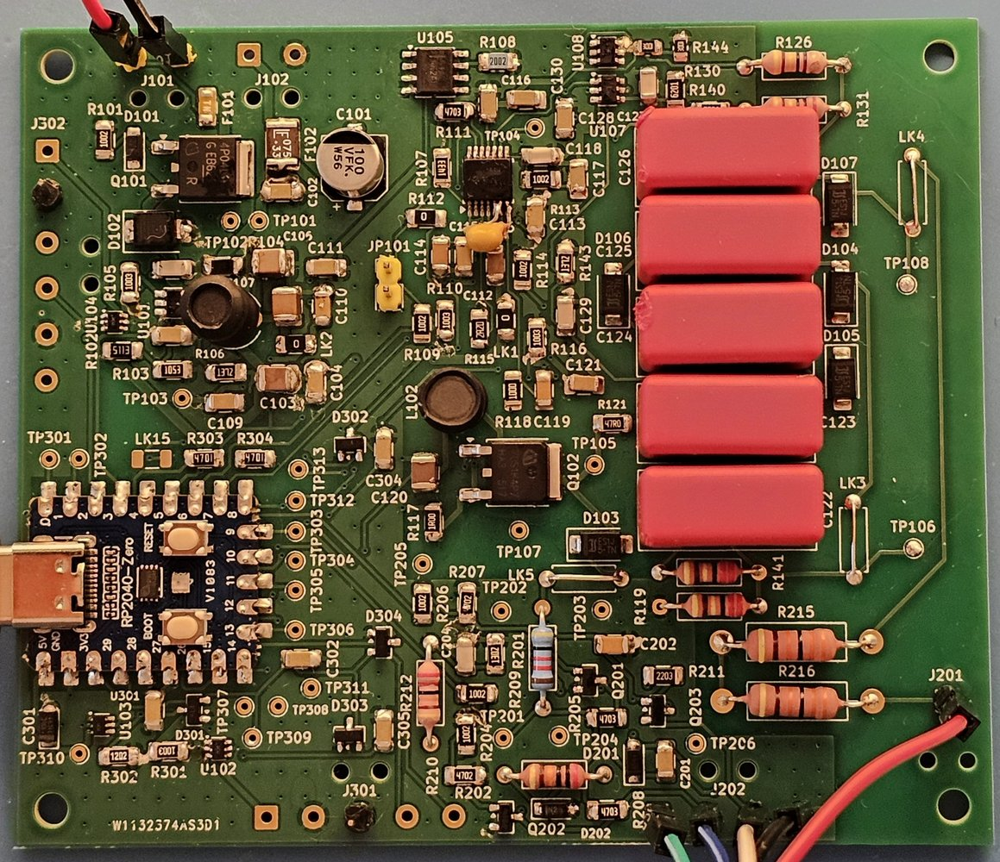
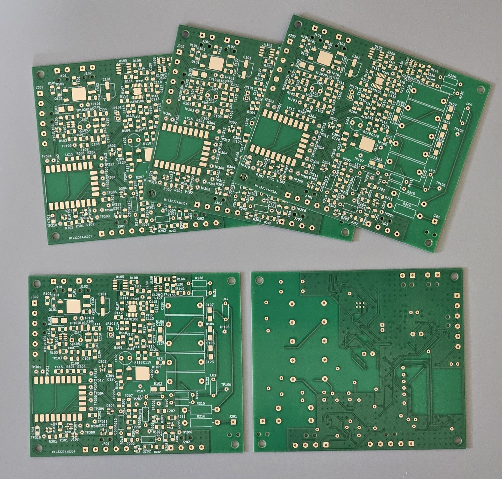

Build and investigate¶
The design is open: hardware under CERN-OHL-P v2, firmware and tools under MIT. Everything lives in the project repository. This site explains; the repository documents.
| Where | What |
|---|---|
| Project plan | Scope, phases and acceptance gates |
| Architecture | Power distribution, boards and who owns what |
| Hardware design | Electrical design, decisions and their sources |
| Bring-up and bench results | Test procedures and measurements, including the A101 bench test |
| Dekatron board | KiCad project, simulations and fabrication files |
| Dekatron schematic (PDF) and board renders (top, bottom) | The board as fabricated, readable without KiCad. Fabrication-ready, not yet electrically validated: bring-up is in progress |
| Bill of materials and assembly checklist | Parts, and the order the board is built and tested in, section by section |
| Enclosure | Printed parts and print settings |


The A101 socket is rare
A101 dekatrons are easy to find, on eBay for reasonable money, but their original socket (PL30-2p, ПЛ30-2п) is not: this build uses one already on hand, and none could be found for sale. To reproduce the display, plan on a different or custom socket. It must keep the tube's pinout and keep the anode wire well away from the others; the printed socket housing would need redesigning to match. A promising route, not yet tried here, is a 3D-printable PL30-2p socket on Printables; if it is printed, the anode pin's clearance to its neighbours should come from air gap and rated wire, not from the plastic.
The A101 bench fixture¶
The tube was first tested on a bench circuit before the controller board existed (see How a dekatron counts). The fixture is three printed parts: a white clamshell around the perf board with the resistor divider and the two step buttons, a black housing that holds the A101's socket, and a shroud over the tube. The shroud covers the pins even if the tube is partly pulled out of its socket, and gives the fixture one colour, smooth lines and no visible hardware. The tube itself dissipates very little power (about 42 mW on the bench: 147 V at 288 µA), so ordinary PLA is fine. The parts are held together with brass threaded inserts and M2/M3 machine screws; the print files and hardware list are in the enclosure folder.
The socket housing and shroud are not just for the bench: they go into the finished display as they are, with the dekatron held horizontally, its end facing the viewer. Only the clamshell stays on the bench.

The assembled bench fixture, photographed 2026-10-18 (tube unlit).

Running, in front of the high-voltage bench supply that feeds it 400 V. Photographed 2026-10-20.

The same, from above.

Taken apart, left to right: socket housing, PL30-2p socket, A101, shroud, and the clamshell opened to show the perf board.

Shroud off: the socket's bracket is screwed to the housing, and the shroud fits over the tube.
High voltage, at your own risk
The display generates about 450 V for the dekatron and about 170-180 V for the Nixies, which can cause serious injury or death. Anything you build from this project is at your own risk. Read the safety notes, and the precautions in the build documents, before building or probing anything.
Status
Phase 1 (dekatron controller and power supply) is in bring-up: the first board is assembled and drives the A101 from its own HV supply, stepping the glow at up to 200 steps/s with exact index counts. Its HV supply first sagged below the setpoint with the tube lit; since 2026-10-26, after small reworks, it holds the setpoint. A full build guide will follow a working, tested instrument.
The first controller/PSU board driving the A101 through a demo loop: still, slow both ways, up to 200 steps/s, and a swing (watch on YouTube, 2026-10-25).


The design and the result: the KiCad render (left) and board 1 as assembled by hand (right), 2026-10-27. The yellow disc capacitor next to U106 is one of the bring-up reworks: 470 pF at the converter's current-sense pin, which stopped noise from ending its switching cycles early.

The dekatron controller/PSU boards as received from PCBWay, 2026-10-15: 100 × 85 mm, two layers, not yet assembled.